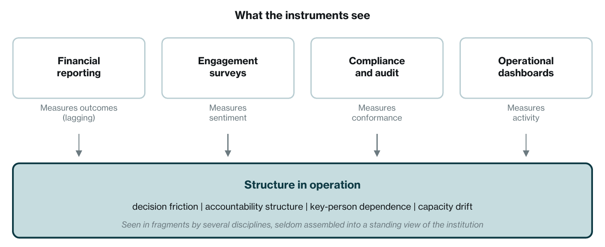
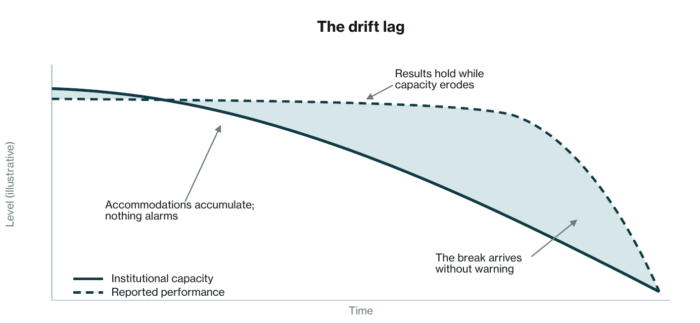

This is a synthesized argument drawing on published research, attributed in-line and listed below. Its claims carry four weights. A sourced observation is a published figure or finding, cited with its method. A proposed construct is a definition this paper offers, such as administrative reality and its four conditions. A plausible mechanism is a cause that fits the evidence but has not been demonstrated; the drift lag of Section 4 and Figure 2 is one. A recommendation is a governance choice the author argues for. Figure 2 is an illustrative sketch, not measured data. The failure-rate literature the paper cites is contested in its exact figures and rests largely on self-reported surveys; the paper relies on the direction of that literature, not on any single number. The title is shorthand for the central claim, which is incomplete and inconsistent integration, not categorical absence. One disclosure belongs up front: Monderman builds diagnostic instruments for the layer this paper describes, which is a stake in where the argument ends.
The Blind Spot
Consider what a board sees. Financial statements, current and trended. Market position and competitive dynamics. Leadership assessments. Engagement and culture scores. Compliance posture, audit findings, risk registers. Operational dashboards with throughput, quality, and cost. An acquirer in diligence sees the same picture at higher resolution, plus a quality-of-earnings report and a synergy model. By any reasonable standard, the modern institution is intensively measured.
Now consider the pattern that measurement has not reliably predicted. A strategy is approved, capital is committed, the leadership team is capable, and delivery stalls anyway. The published estimates of how often this happens are large, and as sourced observations they should be read with their methods attached. Bain reported in April 2024, from its Transformation and Change Survey of more than 400 executives and senior leaders, that only about 12 percent of business transformations achieved their original ambition; the result is what those leaders said about their own programs. BCG's 2021 Global Digital Transformation Survey of more than 850 companies found that 35 percent achieved their transformation objectives, up from 30 percent the year before; that figure rests on respondents' self-ratings against BCG's six success factors and on BCG's own definition of success. A 2015 Forbes Insights survey for KPMG of 963 executives at U.S.-based multinationals found 34 percent of the chief executives among them saying that past transformation programs had failed to achieve the benefits targeted at the outset. The famous claim that 70 percent of change efforts fail is a different matter. Mark Hughes traced it in 2011 and found the figure repeated from source to source without valid empirical evidence behind it, and this paper does not rely on it. What the surveys above do support, within their methods, is narrower: falling short of the original ambition is common, and in the Bain and BCG surveys it was the majority result.
Acquisitions show a similar shape in the surveys. The PwC and Mergermarket study Creating Value Beyond the Deal found 53 percent of acquirers underperforming their industry peers on total shareholder return over the twenty-four months after closing. A 2020 Harvard Business Review article by Graham Kenny repeats an estimate, cited from earlier HBR work, that 70 to 90 percent of acquisitions fail; that is an article's cited estimate, not a systematic review, and the rate moves with the definition of failure. When the postmortems run, on transformations and deals alike, they list integration, decision rights, accountability, operating-model design, and execution among the causes, alongside strategic and technical ones. The observation this paper starts from is about coverage. Strategic and technical causes are routinely assessed going in. The institutional ones are assessed by several disciplines in several places, and this paper's proposal is that they are less often assembled into one structural view of the institution.
The Layer, Defined
Call what those postmortems keep naming administrative reality: the institution as it actually operates, as distinct from the institution as it is documented. This is a proposed construct, and the paper defines it by four observable conditions. Decision friction: how long it actually takes a decision to move from raised to resolved, how many hands it passes through, and where it stalls. Accountability structure: where responsibility actually sits, which is often a different document from the organization chart. Key-person dependence: which individuals the institution silently routes around its formal structure to reach, because they are the ones who reliably deliver. And capacity drift: the slow divergence between the operating model as designed and the operating model as accumulated, one accommodation at a time.
The claim has a scope. It is made about large, multi-unit organizations, public or private, that run a formal governance stack: audited financial reporting, a board or its equivalent, periodic engagement or culture surveys, compliance and internal audit functions, and management dashboards. And it is made about that stack's routine outputs, the board pack, the management report, and the diligence file, not about everything any function inside the organization knows. Smaller organizations, and organizations whose governance runs on a founder's direct knowledge, are outside it.
It is worth being precise about how this layer relates to its neighbors. It is not engagement, which measures sentiment, and it is not leadership quality, which measures individuals. Culture is the nearer neighbor, and the line is analytic rather than exclusive: serious culture frameworks reach well beyond how people feel, into shared norms, habitual practices, and how things actually get done, and those observations overlap with pieces of administrative reality. The difference is the construct and the purpose. Culture work characterizes the social system, usually in order to change behavior. Administrative reality treats decision paths, accountability, dependence, and drift as structural conditions of the institution, held as a governance and risk matter, at the institution level, over time. An organization can have engaged people, healthy values, and capable leaders, and still be slow to move a cross-functional decision. When that happens, the people may or may not be part of the cause. The claim here is only that the structure they operate inside deserves its own line of inquiry, and that filing every stall under a people heading is one way it goes unmanaged.
Why the Layer Is Reported in Fragments
Run the standard instruments one at a time. Financial reporting measures outcomes, and outcomes lag: the numbers tell you what the institution did last quarter, not what it is currently capable of doing. Engagement surveys measure sentiment, and sentiment is not structure: people can feel fine inside an institution that cannot execute, and miserable inside one that can. Compliance measures conformance to defined controls, and an institution can be compliant and structurally slow at the same time, because a control objective rarely asks whether the operating model still fits its purpose. Operational dashboards measure the activity of the processes that were designed in; they seldom ask whether the design still matches the work. Each of these instruments is doing the job it was built for. None was built to report structure in operation, and this paper does not fault them for it.
Two disciplines come closer than the instruments above, and the earlier version of this paper understated both. Internal audit's own definition of its work is assurance over the effectiveness of governance, risk management, and control processes, and a modern audit plan can and does examine decision-making, operational effectiveness, and accountability, not only conformance to controls. Mature acquisition diligence, likewise, is not confined to the numbers. Operational, people, cultural, and technology diligence are established practice, and PwC's own guidance for private equity puts a target operating model and a personnel assessment inside the value creation plan. So the defensible claim is not that nothing looks at this layer. It is that the looking is incomplete and inconsistent: scoped engagement by engagement, varying widely from one organization and one deal to the next, and producing findings that are filed by function rather than assembled into one longitudinal picture of the institution's structural condition.

Specialized lenses exist too, and they see real fragments of the layer. Organizational network analysis, developed most prominently in Rob Cross's work, maps informal structure, hidden central actors, and collaboration bottlenecks, which is real visibility into dependence and friction. Process mining reconstructs how work actually moves through systems, deviations included. Serious culture diagnostics observe behavioral norms. The gap this paper proposes is one of assembly. These lenses are episodic, commissioned one at a time for particular questions, siloed by construct, and their outputs rarely feed a standing, longitudinal, institution-level view that reaches a board pack or a diligence file as a matter of routine. In many organizations that view is held instead by judgment: leaders' feel for their institution, consultants' interviews, an occasional deep dive. All of that is real. Its limits are the familiar ones: it scales poorly, it is hard to repeat, and it leaves with the person who holds it.
How Drift Might Accumulate
What follows is a proposed mechanism, not a finding. The layer would be dangerous if it decayed through decisions that are each locally rational. A workaround is invented because the official process is slow. An extra approval is added after an incident and never removed after the risk passes. A responsibility is informally absorbed by the person who happens to be good at it, and the formal owner quietly stops owning it. A standing meeting is created to compensate for a decision nobody is chartered to make. Every one of these accommodations is sensible on the day it is made. None of them triggers an alarm. On this account, the institution does not decide to drift; it accumulates drift out of reasonable choices.
The friction and load that such a mechanism would produce have been measured, even if the mechanism has not. Gary Hamel and Michele Zanini estimated in Harvard Business Review that excess bureaucracy costs the U.S. economy more than 3 trillion dollars a year in lost output, about 17 percent of GDP, and that nearly one in three American employees either works as a bureaucrat or spends most of their time on bureaucratic tasks. A Deloitte Access Economics survey of Australian organizations, one of the sources behind that estimate, found staff outside management spending 6.4 hours a week complying with rules their own organizations had imposed on themselves, and managers 8.9 hours. Bain's decision research reports that senior leaders and middle managers at most companies spend more than half their time in meetings, that about two-thirds of meetings run out of time before participants can make important decisions, and that one company Bain worked with, once it tracked its delays, found it was postponing decisions about 60 percent of the time. Bain's Rule of Seven holds that every person added to a decision-making group beyond seven cuts decision effectiveness by about ten percent. At one of the seventeen large companies whose time budgets Bain analyzed, a single weekly executive committee meeting consumed 300,000 hours a year across the organization once the preparation it demanded cascaded downward. These are sourced observations from the consultancies' own research. They describe friction and load. They do not, by themselves, show the accumulation mechanism above.
Key-person dependence is proposed to grow by the same silent mechanism. Work routes toward whoever reliably delivers, until the organization chart and the load-bearing structure are two different documents, and the gap between them surfaces on departure. The value at stake has at least one measurement. In PwC's 2018 survey of 100 private equity executives, every deal that lost value had seen more than 10 percent of key employees leave after completion, and 83 percent of the deals that lost significant value had seen 21 to 30 percent of key talent leave. Among deals that gained significant value, 41 percent had held key-talent loss to 5 percent or below. Those are associations in a survey of 100 respondents. The direction of cause is not established by them.

Figure 2 shows the hypothesis in one picture. If results run on accumulated capacity, reported performance would hold while the structure beneath it eroded, and the instruments from Section 3 would be pointed at the line that is still flat. The break would arrive as a surprise, and the surprise would be attributed to whatever was nearest: a departure, a failed program, a bad quarter. That is what the mechanism predicts. Whether it is what happens is what longitudinal evidence would have to show, and Section 6 says how little of that evidence exists.
What Taking the Layer Seriously Would Require
If the layer is real and consequential, then treating it as a managed risk class implies requirements, stated here in principle rather than as any particular solution, and offered as recommendations. First, observation of structure rather than sentiment: indicators anchored in how decisions, accountability, and dependence actually behave, not in how people feel about them. Second, longitudinal comparison: drift is a rate, and a rate is visible only against a baseline, which means snapshots, however sophisticated, cannot see it. Third, separation from individual-level constructs: the unit of analysis is the institution, not the employee, and instruments that grade people will keep landing in the HR file this layer must escape. Fourth, integration and validation: the fragments that internal audit, diligence, and the specialized lenses already capture earn their place in a standing risk view only when they are assembled into one institution-level picture, and any claimed indicator of structural condition earns trust only by demonstrably predicting things that matter, such as decision cycle time, transformation milestones, unwanted departures, and overruns. Whether measurement meeting all four requirements exists yet in mature, validated form is a separate question from whether the layer exists. This paper argues the second claim, not the first.
The practical starting point is inexpensive, because it is a set of questions rather than an instrument. A board, a chief executive, or an acquirer can begin by asking the structural questions the current information pack omits. How long does a cross-functional decision actually take here, and where did the last three stall? Which individuals, if they resigned tomorrow, would halt which processes, and does anything on paper acknowledge that? What has the operating model accumulated since it was designed, and when was any of it deliberately removed? The answers will be anecdotal at first. The point is that the questions belong on the standing agenda, in the governance file, where the layer they describe actually lives.
Where This Argument Could Be Wrong
Four objections deserve to be stated at full strength. First, existing constructs may capture more than this paper credits. Well-designed engagement and culture instruments correlate with performance across firms, and it is possible that sentiment and observed norms are a workable proxy for structure often enough to matter. Internal audit and mature diligence, as Section 3 now concedes, cover more of this ground than the earlier version of this paper allowed. The counter is that a cross-firm correlation is not visibility into a specific institution's structural condition, and that coverage which varies by engagement is not a standing view. But the objection has real force.
Second, observable may not mean actionable. Even with the layer visible, accumulated structure defends itself; Hamel and Zanini's work documents how reliably bureaucracy regenerates after pruning. Measurement without a governance owner changes nothing, and it is fair to ask whether owners would act on structural findings any more readily than they act on the failure statistics already available.
Third, judgment may substitute. Seasoned operators read institutions well, and for a single organization with a long-tenured, honest leadership team, cultivated judgment may outperform any instrument. The limits of judgment are scale, comparability, and portability: it cannot cover a portfolio, cannot be compared across units, and departs with its holder. For a single institution, though, the objection stands.
Fourth, the causal arrow could run backward. Perhaps performance trouble produces structural symptoms, rather than structural decay producing performance trouble, and the drift lag of Figure 2 has the sequence reversed. Settling that question requires longitudinal evidence linking measured structural conditions to subsequent outcomes, and that evidence base, in public and mature form, largely does not yet exist. Readers should hold the thesis with exactly that reservation, and the paper's own language is meant to hold it the same way.
Implications by Seat
These are recommendations, and each rests on the hypothesis as much as on the sourced observations.
For the board: structural condition belongs on the risk register, alongside cyber, liquidity, and concentration, because it plausibly behaves like those risks: it would accumulate quietly, it can be inexpensive to begin examining and costly to discover only after failure, and it often lacks a natural operating owner, which makes it the board's to steward. The structural questions in Section 5 are a reasonable annual starting point.
For the chief executive: the operating model is an asset that depreciates, and its maintenance is rarely scheduled with the discipline that capital planning receives. Capacity tends to get rebuilt in crisis, after the break in Figure 2, at the moment repair is most expensive. Treating structural review as a recurring discipline rather than a response is the executive translation of this paper.
For the acquirer and the operating partner: the first hundred days run on the target's administrative reality, not on the deal model. Where diligence already covers the operating model, the people, and the dependencies, the recommendation is to assemble those findings into one structural view of the target and price what it shows. Where it does not, the cheapest moment to look is before signing: map how decisions actually move in the target, map who the institution actually depends on, and price the map. For the transformation leader: a transformation changes this layer while running on it. Sequencing structural repair ahead of capability building is a reasonable design choice on that account, and one the failure surveys give reason to test rather than a proven rule.
Conclusion
The claim here is deliberately narrow, and it is a proposal. A layer of institutional conditions plausibly sits upstream of delivered performance; that is a hypothesis awaiting longitudinal evidence. It is observable in decision friction, accountability structure, key-person dependence, and capacity drift; that is a proposed construct. Fragments of it are visible to several disciplines, internal audit and mature diligence among them, and it is analytically distinct from culture, engagement, and leadership; those are sourced observations. What routine governance reporting often does not do, in the organizations this paper is about, is assemble those fragments into a standing, longitudinal, institution-level view, which leaves a consequential class of institutional risk carried inconsistently and, in many places, largely blind. Institutions that learn to see their administrative reality will get the chance to steward it. The rest will keep reading dashboards that are working as designed, measuring what they were built to measure, and if the mechanism this paper proposes is real, they will keep reading them right up until the layer underneath gives way.
Bain & Company. 88% of business transformations fail to achieve their original ambitions; those that succeed avoid overloading top talent. Press release, April 15, 2024, reporting the Transformation and Change Survey of more than 400 executives and senior leaders.
Bain & Company, Decision Insights series. Mankins, M., and J. Davis-Peccoud. Decision-Focused Meetings (time in meetings, meetings ending before decisions, the postponement example); Blenko, M., M. Mankins, and P. Rogers. Decide and Deliver: Five Steps to Breakthrough Performance in Your Organization, Harvard Business Review Press, 2010, and Effective Decision Making and the Rule of 7, bain.com.
Mankins, M., C. Brahm, and G. Caimi. Your Scarcest Resource. Harvard Business Review, May 2014 (time budgets of 17 large corporations; the 300,000-hour meeting).
Boston Consulting Group. Performance and Innovation Are the Rewards of Digital Transformation. December 2021, reporting the BCG Global Digital Transformation Survey 2021 of more than 850 companies; the 35 percent success rate is a success score calculated from participants' self-ratings on BCG's six success factors.
Cross, R. What Is Organizational Network Analysis? robcross.org.
Deloitte Access Economics. Get Out of Your Own Way: Unleashing Productivity. Building the Lucky Country series, 2014 (survey of Australian public and private organizations; 6.4 hours a week for staff and 8.9 hours for managers complying with self-imposed rules).
Errida, A., and B. Lotfi. The Determinants of Organizational Change Management Success. International Journal of Engineering Business Management, 2021.
Forbes Insights and KPMG. Business Transformation: Driving the Optimum Value. May 2015 (survey of 963 executives at U.S.-based multinationals conducted by Forbes Insights; 34 percent of CEO respondents said past transformation programs had failed to achieve the business benefits targeted at the outset). KPMG report.
Hamel, G., and M. Zanini. Excess Management Is Costing the U.S. $3 Trillion Per Year. Harvard Business Review, September 2016; and The $3 Trillion Prize for Busting Bureaucracy, 2016.
Hughes, M. Do 70 Per Cent of All Organizational Change Initiatives Really Fail? Journal of Change Management, 2011, which finds no valid and reliable empirical evidence for the 70 percent figure.
Institute of Internal Auditors. Definition of internal auditing and the Global Internal Audit Standards, 2024 (assurance over the effectiveness of governance, risk management, and control processes).
Kenny, G. Don't Make This Common M&A Mistake. Harvard Business Review, March 2020, which cites the 70 to 90 percent acquisition failure estimate from earlier HBR work.
Knowledge at Wharton. Why Many M&A Deals Fail, and How to Beat the Odds. 2025.
PwC and Mergermarket. Creating Value Beyond the Deal, 2019 (53 percent of acquirers underperformed industry peers on total shareholder return over the 24 months after closing).
PwC. Creating Value Beyond the Deal: Private Equity, 2019 (2018 survey of 100 private equity executives; Exhibit 5 on key-talent loss and deal value; target operating model and personnel assessment as components of a value creation plan).
van der Aalst, W. Process Mining: Data Science in Action. Springer, 2016.
Jason Adamson is the founder of Monderman, an institutional performance research company. He is the author of Governance, Bureaucracy and Organization: Stewardship, Drift, and Administrative Capacity (Routledge, forthcoming). His career spans more than two decades of deep experience in intelligence analysis across the U.S. government, alongside private-sector experience at CrowdStrike and in startups. He holds an M.S. in Organization Development from Pepperdine University.
Monderman is an institutional performance research company building Deterministic AI Infrastructure for organizational diagnostics. Its diagnostic platform produces structured operational reads for enterprises across sectors, including defense, healthcare, government, financial services, technology, manufacturing, and higher education.
Continue